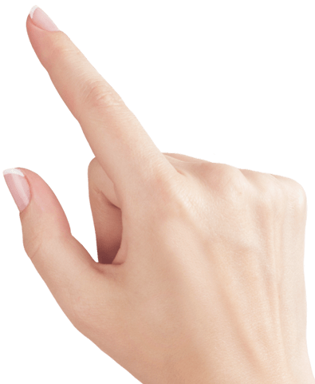
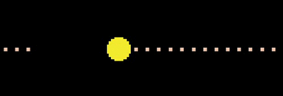

<!--
  Generated template for the AdivinaPage page.

  See http://ionicframework.com/docs/components/#navigation for more info on
  Ionic pages and navigation.
-->
<ion-header class="firstT">
  <ion-navbar class="header-menu">
    <ion-title >ADIVINA ADIVINADOR</ion-title>
  </ion-navbar>
</ion-header>

<ion-content padding>

  <div text-center><p class="cls_title">Elije un número entre el 0 al 20</p></div>
  <ion-input text-center class="cls_number" type="number" min="1" max="20" [(ngModel)]="num" placeholder="------"></ion-input>

  <ion-card *ngIf="mayorMenor=='igual'" style="margin-top: 20px;">
    <ion-card-header text-center style="background-color: #FFC107;">
      ¡¡¡FELICITACIONES!!!
    </ion-card-header>
    <ion-card-content text-center style="background-color: #7fc016; padding-top: 15px;">
      HAS GANADO, EL NÚMERO SECRETO ES EL {{ num }}
    </ion-card-content>
  </ion-card>
<div *ngIf="mayorMenor!='igual'" text-center>
    <button ion-button class="cls_adiviBtn" (click)="compruebaNumero()" text-center ion-button>ADIVINAR</button>
    <ion-fab center top style="top: 208px; left: 35%; margin-left: 0%" (click)="compruebaNumero()" >
        <div></div>
      </ion-fab>
</div>

<div *ngIf="mayorMenor!='igual'">
  <p style="font-size: 15px; margin-top: 5%; color: #E91E63; font-weight: bold; font-family: 'Kalam'">TE AYUDAMOS?</p>
  <p style="font-family: 'Kalam'">El número secreto debe ser:</p><p style="font-size: 20px; font-family: 'Kalam'" text-center>{{ mayorMenor }} </p>
</div>


  <button style="background-color: #3F51B5; margin-top: 43px; font-family: 'Kalam'" *ngIf="mayorMenor=='igual'" ion-button block (click)="reinicia()">Volver a Jugar</button>

  <!--ion-row >
      <ion-col col>
        
      </ion-col>
  </ion-row-->

</ion-content>
